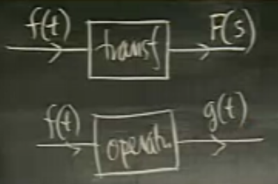
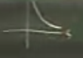

Ders 19
Bu dersten başlayarak ve birkaç ders boyunca çoğu mühendis ve bazı bilimcinin, onların karşılaştığı türden tüm diferansiyel denklemleri çözmekte en popüler bulduğu yöntemi göreceğiz. Yöntemin ismi Laplace Transformu.
Bu yöntemi kullanmak için birkaç hafta yeterli, ama o zaman bile metot etrafında belli bir gizem bulutu kalıyor, insanlar tekniğin nereden geldiğini bir türlü anlayamıyorlar, ve doğal olarak bu onları rahatsız ediyor.
Laplace Transformunu anlamanın iyi bir yolu onu üstel seri (power series) olarak görmektir. Bir üstel seri bildiğimiz gibi şu formdadır
$$ \sum_{0}^{\infty} a_n x^n $$
Bu seriye yapılacak en doğal işlem onu toplamaktır. Sonuç genelde $f(x)$ gibi bir genel tanımla gösterilir, biz burada gelenekten biraz kopacağız, toplamın $a$ ile ilişkisini iyice belli etmek için $A(x)$ kullanacağız.
$$ \sum_{0}^{\infty} a_n x^n = A(x) \qquad (1) $$
Bir değişiklik daha: $a_n$ aslında bir ayrıksal dizin içindeki belli $a$ değerleri, bunu da iyice belli etmek için bilgisayar notasyonu kullanalım, $a_n$, $a(n)$ olsun.
$$ \sum_{0}^{\infty} a(n) x^n = A(x)$$
Bu şekilde bakınca, üstel serinin yaptığı bir ayrıksal fonksiyonu $a$'yi (çünkü içinde reel sayılar var, ve bir fonksiyon) belli bir toplam ile ilintilendirmek.
$$ a(n) \leadsto A(x) $$
Peki eğer $a(n) = 1$ ise, yani fonksiyon hep aynı sabit değer 1'i veriyorsa, o zaman toplam ne olur?
$$ 1 \leadsto \frac{1}{1-x}, \ \ |x|<1 $$
çünkü $a(n) = 1$ ise üstel seri
$$ = 1 \cdot x + 1 \cdot x^2 + 1 \cdot x^3 + ... $$
$$ = x + x^2 + x^3 + ... $$
olacaktır, ve bu toplam $1/1-x$'e yaklaşır (dikkat: $|x|<1$ olduğu durumda).
Başka bir fonksiyona daha bakalım, $1 / n!$
$$ \frac{1}{n!} \leadsto e^x $$
Bu (ilginç) bakış açısında göre, işleme bir ayrıksal fonksiyon giriyor, dışarıya bir sürekli fonksiyon çıkıyor. Bu arada dikkat, giren $n$ bazlı, çıkan $x$ bazlı.
Şimdi diyelim ki ayrıksal olan toplam işlemini sürekli hale getirmek istiyorum. Önce
$$ n = 0,1,2,.. $$
yerine sürekli bir değişken kullanmaya başlarım, mesela
$$ t: 0 \le t \le \infty $$
ki bu $t$ üstteki aralıktaki tüm reel değerleri taşıyabilecek.
Fakat ayrıksaldan sürekliliğe geçince toplam işlemini kullanamam, onun yerine entegral kullanmam gerekir.
$$ \int_0^{\infty} a(t)x^t \mathrm{d} t $$
Peki bu neyin fonksiyonu acaba? $t$'nin değil çünkü onun "üzerinden" entegre ederek yokediyorum (integrate out), entegrasyon sonrası $t$ kalmıyor. Hayır, üstteki fonksiyon her $x$ için belli bir değer hesaplayacağına göre, o $x$'in bir fonksiyonu olmalı.
$$ \int_0^{\infty} a(t)x^t \mathrm{d} t = A(x)$$
Fakat hala işimiz bitmedi. Hiçbir mühendis, matematikçi üstteki gibi bir formu kullanmaz, çünkü $x$ baz halde ve bu tür ifadeler türev alırken, entegrasyon yaparken problem çıkartabilir. Daha iyi bir baz $e$ olur, $e$ bazlı türev almayı, entegrasyon yapmayı herkes sever [çünkü çok kolay].
$$ x = e^{\ln x} $$
$$ x^t = (e^{\ln x})^t $$
Bir nokta daha: eğer $x > 1$ ise üstteki entegralin bir değer yaklaşması (converge) çok zordur, çünkü entegral üst sınırında $\infty$ var, bu tür entegraller dikkatli muamele ister. O zaman şu şartı koyarım, $0 < x < 1$.
Eğer $0 < x < 1$ olacak ise, $\ln x < 0$ demektir.
Tabii kimse $\ln x$'i bir değişken olarak kullanmaz,
$$ s = \ln x $$
ve negatif değişkenlerle uğraşmak istemediğimiz için
$$ -s = -\ln x $$
yaparız, ki hep pozitif olan $-s$ ile iş yapabilelim.
Tüm bunlar kozmetik değişiklikler bu arada, sembolik olarak bu işlemi hoşumuza giden bir şeye döndürmek için yaptıklarımız.
Entegrali tekrar yazalım şimdi. Öncelikle kimse fonksiyon olarak $a(t)$ ismini kullanmaz, ona $f$ diyelim.
$$ \int_0^{\infty} f(t)(e^{-s})^t \mathrm{d} t = ..$$
Üstünü almak, kurallara göre çarpıma dönüştüğüne göre
$$ \int_0^{\infty} f(t)e^{-st} \mathrm{d} t = ..$$
Fonksiyon neye eşit? $A(x)$, $x$'in fonksiyonu idi, ama şimdi $s$ kullanıyoruz, o zaman
$$ \int_0^{\infty} f(t)e^{-st} \mathrm{d} t = F(s)$$
Nihai formül ustteki. Ve tekrar vurgulayayım, bu formül ayrıksal üstel seri (1)'in analog versiyonundan ibaret. İşte Laplace Transformu budur. Bu operasyonun en alışılmadık tarafı içeri $t$'nin fonksiyonun girmesi, ama dışarı $s$'in fonksiyonun çıkması. Kıyasla operatörlerde böyle değildi, diferansiyel operatöründe mesela $3x$ giriyor, dışarı $3$ çıkıyor, ama burada işler böyle değil, bu karışıklık yaratıyor. Ama vurgulamak gerekir ki Laplace Transformu adı üstünde bir transformdur, değişkenin değişmesinin sebebi burada.

Laplace için kitabımızın kullandığı notasyon
$$ \mathcal{L}(f(t)) = F(s) $$
Fakat bazen bu notasyonu kullanmak çok zor oluyor, bir sürü parantez üst üste biniyor, vs. O durumlarda şu yeterli
$$ f(t) \leadsto F(s) $$
Tabii lineerlik kuralını da üstteki ile ifade etmek zor, onun için $\mathcal{L}$ daha iyi,
$$ \mathcal{L}(f+g) = \mathcal{L}(f) + \mathcal{L}(g) $$
Sabitle çarpım kural
$$ \mathcal{L}(cf) = c \mathcal{L}(f) $$
Lineerlik kuralı işliyor çünkü entegraller bağlamında düşünürsek, entegrallerin toplamı aynı entegral altında gruplanabilir, yani bu kural işliyor çünkü entegralin kendisi de lineer bir operatör.
Eh artık ise koyulalım. Mesela bildik bazı fonksiyonların Laplace transformunu bulalım.
Örnek
$$ 1 \leadsto ? $$
$$ \int_0^{\infty} e^{-st} \mathrm{d} t $$
Dikkat, bu entegral uygun olmayan bir (improper) entegral. Bu tür entegrallerin tanımına bakalım
$$ \lim_{R \to \infty} \int_{0}^{R} e^{-st} \mathrm{d} t $$
Önce şu entegrali hesaplayalım,
$$ \int_{0}^{R} e^{-st} \mathrm{d} t $$
$t$'ye göre entegral alıyoruz, o zaman $s$ bir sabit gibidir.
$$ = \frac{ e^{-st}}{-s} \bigg|_{0}^{R} $$
$$ = \frac{e^{-sR} - 1}{-s} $$
O zaman
$$ \lim_{R \to \infty} \int_{0}^{R} e^{-st} \mathrm{d} t = \lim_{R \to \infty} \frac{e^{-sR} - 1}{-s} = \frac{1}{s} $$
Yani
$$ 1 \leadsto \frac{1}{s} $$
Bu doğru mu? Hayır değil. Bir hata yaptık, daha doğrusu bir şeyi atladık. Limit ifadesindeki $e^{-sR}$ sıfıra gider, sadece ve sadece $s > 0$ ise. Sonucun tam hali
$$ 1 \leadsto \frac{1}{s}, \ \ s > 0 $$
Ama diğer yandan "ya $s < 0$ ise o zaman Laplace Transformu nedir?" sorusunun da anlamı yoktur. 1'in Laplace transformu alttaki fonksiyondur, bu fonksiyonun eksi bölgesinde karşılığı yoktur.

Örnek
$$ e^{at} \leadsto ? $$
Bu arada insanlar Laplace transform tekniğini şimdiye kadar pek çok kez gördüğümüz türden fonksiyonlar üzerinde kullanırlar hep, üstel fonksiyonlar, polinomlar, sinüs, cosinüs ifadeleri, kompleks sayılar gibi. Diğer türden şeylerde .. onu kullanmazlar. Bu hayal kırıklığı yaratmasın, ODE çözerken Laplace tekniği bazı işleri diğer kullandığımız tekniklerden çok daha iyi yapar. Neyse Laplace'in avantajlarına ileride daha belirgin vurgu yapacağız. Örneğimize dönelim.
Aslında daha genel bir duruma bakalım, şu ifadenin
$$ e^{at}f(t) $$
Laplace transformunu yapacağız, ve bunu $f(t)$'nin transformu bilindiği durum için yapacağız, üstteki blok ifade için genel bir formül üreteceğiz, ve onu başarınca, $e^{at}$ ifadesi $e^{at} \cdot 1$ olarak görülebilir, eh 1'in transformunu zaten biliyoruz, o zaman genel formül üzerinden $e^{at}$'in transformunu hemen buluruz. Genel formülün transformu
$$ \int_0^{\infty} e^{at} f(t)e^{-st} \mathrm{d} t $$
İki üstel ifadeyi birleştirelim, ve öyle yapalım ki $f(t)$'in transformu bir şekilde formülde olsun. Ulaşmak istediğim nokta
$$ \int_0^{\infty} f(t)e^{-( ... )t } \mathrm{d} t $$
şeklinde, eğer eksi bu şekilde dışarıda kalacaksa, geri kalanlar neye benzer?
$$ \int_0^{\infty} f(t)e^{-(s-a)t } \mathrm{d} t $$
Bu nedir? Bu da bir Laplace transformudur! Eğer $-a$ orada olmasaydı, geri kalanlar $f(t)$'nin transformu olacaktı. O zaman
$$ = F(s-a) $$
Şartları koyalım, üstteki durumda $s-a > 0$ olmalı, o zaman $s > a$ olmalı.
$F$ içinde $-a$ sonucu bir tür "kaydırma" gibi duruyor, zaten bu genel formülün ismi "üstel kaydırma kuralı (exponential shift law)". Mühendisler bu kuralı çok kullanırlar.
$e^{at}$'ye dönelim. 1'in transformu $1/s$ ise, kaydırma kuralıyla
$$ e^{at} \leadsto \frac{1}{s-a} $$
Peki transform edilmek istenen sinüs ve cosinüs olduğu durumlarda ne yaparız? Hatırlayalım, $\sin$ ve $\cos$ ifadelerini kompleks olarak ifade edebiliriz, ve üstteki genel kural $a$ bir kompleks sayı olduğunda da işler.
$$ e^{(a+bi)t} \leadsto \frac{1}{s - (a+bi)}, \ \ s>a $$
Kontrol edelim, mesela
Örnek
$$ \cos at \leadsto ? $$
$$ \cos (at) = \frac{e^{iat} + e^{-iat} }{2} $$
Bu formül nereden geldi? Geriye doğru Euler formülünden (backwards Euler formula). İleri doğru Euler
$$ e^{i\theta} = \cos\theta + i\sin\theta $$
$$ e^{-i\theta} = \cos\theta - i\sin\theta $$
Eğer iki formülü toplarsak
$$ e^{i\theta} + e^{-i\theta} = 2 \cos\theta $$
$$ \frac{e^{i\theta} + e^{-i\theta}}{2} = \cos\theta $$
O zaman
$$ \mathcal{L}(\cos(at)) = \frac{1}{2} \mathcal{L} (\frac{1}{s-ia} + \frac{1}{s+ia} ) $$
Yanlız dikkat, eşitliğin sol tarafına bakalım, bir reel ifade var, sağ tarafta ise kompleks bazı ibareler var. Demek ki bir şekilde sağ taraf reel bir sonuca ulaşmalı. Hatırlarsak, bir şeyin reel olup olmadığını kontrol etmenin iki yolu var. Ya hesabı yaparız ve hayali kısmının sıfır olduğunu görürüz, ya da ifade içindeki $i$'lerin işaretini değiştiriz, sonuç hala aynı ise, o zaman elimizdeki reel bir ifade demektir. Öyle ya, eğer $i$ bölümü aktif olan bir ifadeye sahip olsaydık, $i$'nin işareti değişince sonuç değişirdi.
$$ \frac{1}{s-ia} + \frac{1}{s+ia} $$
ifadesinde işaretler değişirse
$$ \frac{1}{s+ia} + \frac{1}{s-ia} $$
olur. Bu hala aynı ifade! Demek ki üstteki toplam reel bir sayı.
Biz sonucu yine de hesaplayalım
$$ = \frac{1}{2}\frac{2s}{s^2+a^2} $$
$$ \cos at \leadsto \frac{s}{s^2+a^2} $$
Benzer hesabı $\sin$ için yaparsak
$$ \sin at \leadsto \frac{a}{s^2 + a^2} $$
İşlememiz gereken önemli bir konu, Laplace transform tersi (inverse Laplace Transform). Çoğu zaman diferansiyel denklemlerle uğraşırken çoğunlukla elimize bir $F(s)$ geçer, ve oradan geriye doğru $t$ bazındaki formüle geçmemiz gerekir. Bu geriye gidiş için hazır tabloları kullanmak yeterli değil, işin önemli bir bölümünü kendimiz yapmamız lazım. Onun için de kısmi kesirlere ayırma (partial fraction decomposition) yapmak lazım.
$$ \frac{1}{s(s+3)} \ \stackrel{-1}{\leadsto} ? $$
$$ \frac{1}{s(s+3)} = \frac{1/3}{s} + \frac{-1/3}{s+3} $$
Laplace tersi işlemi lineer'dir, o zaman tersi işlemini teker teker üstteki parçalar üzerinde uygulayabiliriz. Şimdi iyi haber, bu parçaların her biri hazır tablolarda bulunan türden.
$$ = \frac{1}{3} \mathcal{L}^{-1}\frac{1}{s} -
\frac{1}{3} \mathcal{L}^{-1}\frac{1}{s+3}
$$
$\mathcal{L}^{-1}1/s$'in ne olduğunu biliyoruz, $=1$. Diğeri
$$ \frac{1}{s+3} \stackrel{-1}{\leadsto} e^{-3t} $$
$$ =
\frac{1}{3} - \frac{1}{3} e^{-3t}
$$
Şimdi $t^n$'nin Laplace transformunu yapmak istiyorum.
$$ \int_0^{\infty} t^ne^{-st} \mathrm{d} t $$
Parçalarla entegre (integration by parts) tekniğini kullanabilirim, çünkü $t^n$ pek çok art arda türevini almak isteyebileceğim bir şey, $e^{-st}$'yi ise tekrar tekrar kolayca entegre edebilirim.
Parçalarla entegre tekniğinde ilk başta türev alınmaz, entegrasyon yapılır. Bilindiği gibi parçalarla entegrasyon formülü
$$ \int_a^b u \mathrm{d} v = uv - \int_a^b v \mathrm{d} u $$
Sonra (eksi işaretinden sonra) her ikisi de yanyana yapılır.
$$ t^n \frac{e^{-st}}{-s} \bigg]{0}^{\infty} - \int{0}^{\infty} nt^{n-1} \frac{e^{-st}}{-s} \mathrm{d} t \qquad (3) $$
Bu parçaları teker teker inceleyelim, $s>0$ olsun
$$ \lim_{t \to \infty} \frac{t^n e^{-st}}{-s}$$
$$ = \frac{-1}{s}\lim_{t \to \infty} \frac{t^n}{ e^{st}}$$
Üstteki ifadede hem bölen hem bölünen sonsuza gidiyorlar, ama hangisi daha hızlı sonsuza gidiyor acaba? Cevap bölendeki $e$ bazlı ifade. Çünkü L'Hospital'ın Kuralı böyle söylüyor. Özetlemek gerekirse bu kural / teori hem bölümün hem bölenin aynı anda ardı ardına türevini alır, bu türevler sonucu üst taraf $n,n-1,n-2,..$ diye azalırken bölendeki $e$ bana mısın bile demez, değişmeden kalır. Bölüm $t^0$'a kadar iner, ama alt taraf aynı kaldığı için o kazanır, yani üstteki ifadede bölen sonsuza gider, ifadenin tamamı sıfıra gider.
$$ = \frac{-1}{s}\lim_{t \to \infty} \frac{t^n}{ e^{st}} = 0$$
(3)'teki sol kısma dönersek
$$ 0 - 0 $$
elde ederiz, yani sıfır. (3)'e geri dönelim
$$ 0 - 0 + \frac{n}{s} \int_{0}^{\infty} t^{n-1} e^{-st} \mathrm{d} t = \frac{n}{s} \mathcal{L} (t^{n-1}) $$
Bu bir azaltma formülü haline geldi, yani her transform bir öncekinin bir eksiltilmiş hali.
$$ \mathcal{L} (t^n) = \frac{n}{s} \mathcal{L} (t^{n-1}) $$
Bir sonrakine bakarsak, ve bu zinciri sonuna kadar devam ettirirsek
$$ \frac{n}{s} \mathcal{L} (t^{n-1}) = ... = \frac{n(n-1)...1 }{s^n}\mathcal{L}(t^0) $$
$$ = \frac{n!}{s^{n+1}} $$
$s$ üzeri $n+1$ çünkü bir ekstra $1/s$ $\mathcal{L} (t^0)$'dan geliyor.
Soru - Problem Set 7 Part II 26 a)
Farz edelim ki $f(t)$'nin Laplace Transformu $F(s)$ ve $a > 0$. $g(t) = f(at)$ için değişken değiştirme (change of variables) tekniğini kullanarak bir formül bul, bu bu formül $F(s)$'i kullanan bir formül olsun.
Cevap
Eğer düz formülü yazsaydık,
$$ \int_{ 0}^{\infty} f(at) e^{ -st} \mathrm{d} t $$
olacaktı. Üstteki $f(at)$'yi $f(t)$ gibi bir forma nasıl döndürürüz? $a$'yi dışa çekemeyiz, çünkü $f$'in nasıl bir fonksiyon olduğunu bilmiyoruz. O zaman $f$'e tek değişken veremesek bile "veriyormuş gibi" yaparız, değişken değişimi kullanırız.
$$ u=at, t = u/a, \mathrm{d} u=a \mathrm{d} t $$
$$ \int_{ 0}^{\infty} f(u) e^{ -s(u/a)} 1/a \mathrm{d} u $$
$$ = \frac{ 1}{a}\int_{ 0}^{\infty} f(u) e^{ -(s/a)u} \mathrm{d} u = \frac{ 1}{a}F \bigg(\frac{ s}{a} \bigg) $$
Bu arada $f(t)$ yerine $f(u)$ var ama, zaten $t$ değişkeni bir yer tutucu gibi, önemli olan, "Laplace Transformundan" bahsedilen fonksiyon $f$.
Yukarı